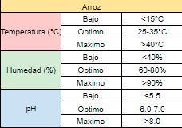
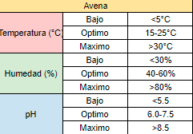
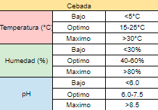
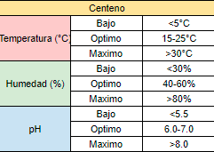
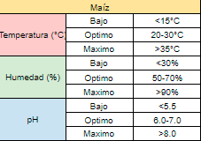
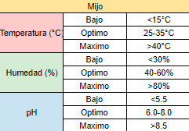
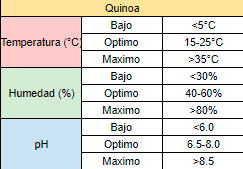
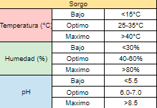
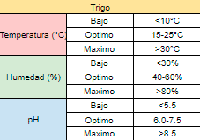
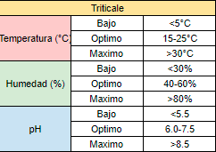

Arroz
Prepara bien el terreno realizando un laboreo adecuado y nivelando el suelo para permitir una buena inundación. Utiliza semillas certificadas de variedades adaptadas a tu región climática, sembrándolas a la profundidad y densidad recomendadas. El arroz requiere inundación constante del campo durante su crecimiento, manteniendo una lámina de agua de alrededor de 5-10 cm de altura. Aplica fertilizantes equilibrados, ricos en nitrógeno durante la etapa vegetativa y fósforo y potasio durante la formación del grano, siguiendo las recomendaciones locales. Mantén el cultivo libre de malezas mediante métodos manuales, mecánicos o herbicidas específicos para arrozales.

Avena
Prepara bien el terreno realizando un laboreo profundo para airear y desmenuzar el suelo antes de la siembra, incorporando abono orgánico o fertilizantes según los requerimientos. Utiliza semillas certificadas de variedades adaptadas a tu región climática, sembrándolas a la profundidad y densidad recomendadas, generalmente entre 2-5 cm. La avena requiere suelos bien drenados y riegos moderados, especialmente durante el macollaje, encañado y llenado del grano, evitando el encharcamiento. Aplica fertilizantes equilibrados ricos en nitrógeno durante el crecimiento vegetativo y fósforo y potasio en la formación del grano, siguiendo las dosis recomendadas localmente. Mantén el cultivo libre de malezas mediante métodos mecánicos como escardas o herbicidas autorizados, ya que compiten por nutrientes, agua y luz.

Cebada
Realiza una buena preparación del suelo mediante un laboreo profundo para eliminar malezas y airear la tierra antes de la siembra, incorporando abono orgánico o fertilizantes según los requerimientos. Utiliza semillas certificadas de variedades adaptadas a tu región climática, sembrándolas a la profundidad y densidad recomendadas, generalmente entre 2-4 cm. La cebada requiere riegos moderados y constantes, especialmente durante las etapas de macollaje, encañado y llenado de grano, evitando el exceso de humedad que puede favorecer enfermedades. Aplica fertilizantes equilibrados ricos en nitrógeno durante el crecimiento vegetativo y fósforo y potasio durante la formación del grano, siguiendo las recomendaciones locales.

Centeno
Prepara bien el terreno realizando un laboreo profundo para airear y desmenuzar el suelo antes de la siembra. El centeno tolera bien suelos pobres y ácidos, pero se desarrolla mejor en suelos francos y bien drenados. Incorpora abono orgánico o fertilizantes según los requerimientos del suelo. Utiliza semillas certificadas de variedades adaptadas a tu región climática, sembrándolas a la profundidad y densidad recomendadas, generalmente entre 2-5 cm. Realiza riegos moderados durante las etapas críticas como la germinación, el macollaje y el llenado de grano, evitando el encharcamiento. El centeno es resistente a la sequía pero requiere humedad adecuada. Aplica fertilizantes equilibrados ricos en nitrógeno durante el crecimiento vegetativo y fósforo y potasio en la formación del grano, siguiendo las dosis recomendadas localmente.

Maiz
Antes de plantar, prepara bien el suelo mediante un buen laboreo y aportando suficiente materia orgánica. Utiliza semillas certificadas y adaptadas a tu zona,siguiendo las instrucciones de profundidad y distancia de siembra recomendadas. El maíz requiere un suministro constante de agua, especialmente durante la floración y el llenado del grano, por lo que debes regar regularmente, pero sin encharcar. Aplica fertilizantes equilibrados según un análisis previo del suelo, prestando especial atención a la fertilización nitrogenada.Mantén el cultivo libre de malezas mediante métodos mecánicos o herbicidas autorizados, ya que compiten por recursos. Realiza un monitoreo regular para detectar plagas o enfermedades a tiempo y utiliza métodos de control integrados como rotación de cultivos, variedades resistentes y, si es necesario,productos fitosanitarios aprobados.

Mijo
Prepara bien el terreno realizando un laboreo ligero y eliminando las malezas antes de la siembra. El mijo se adapta bien a suelos pobres y áridos, pero prefiere suelos sueltos y bien drenados. Incorpora abono orgánico o fertilizantes según los requerimientos del suelo. Utiliza semillas certificadas de variedades adaptadas a tu región climática, sembrándolas a la profundidad y densidad recomendadas, generalmente entre 2-5 cm. El mijo es un cultivo resistente a la sequía, pero requiere riegos ligeros durante la germinación y el llenado de grano. Aplica fertilizantes orgánicos o químicos balanceados, ricos en nitrógeno durante el crecimiento vegetativo y fósforo y potasio en la formación del grano, siguiendo las dosis recomendadas localmente.

Quinoa
Prepara bien el terreno realizando un laboreo profundo y eliminando malezas antes de la siembra. La quinoa prefiere suelos sueltos, bien drenados y con buen contenido de materia orgánica. Utiliza semillas certificadas de variedades adaptadas a tu región y siembra a la profundidad y densidad recomendadas, generalmente entre 2-4 cm. Realiza un riego de germinación inmediatamente después de sembrar y posteriormente riegos moderados durante el desarrollo vegetativo, evitando el encharcamiento. La quinoa es resistente a la sequía pero requiere humedad adecuada. Aplica fertilizantes orgánicos balanceados ricos en nitrógeno, fósforo y potasio, siguiendo recomendaciones locales.

Sorgo
Realiza un buen laboreo del suelo para eliminar malezas y airear la tierra antes de la siembra, incorporando abono orgánico o fertilizantes según requerimientos. Utiliza semillas certificadas de buena calidad adaptadas a tu región climática, sembrándolas a la profundidad y densidad recomendadas para la variedad, generalmente entre 2-5 cm. El sorgo requiere riegos moderados durante germinación, macollaje y llenado de grano, siendo un cultivo resistente a la sequía. Aplica fertilizantes equilibrados ricos en nitrógeno durante crecimiento vegetativo y fósforo y potasio en llenado de grano, siguiendo recomendaciones locales.

Trigo
Prepara adecuadamente el suelo con un buen laboreo, incorporando materia orgánica y nivelando el terreno. Elige una variedad de trigo apropiada y siembra a la profundidad y distancia correctas según tu región. Riega regularmente durante las etapas críticas, evitando el exceso de agua. Fertiliza de acuerdo a un análisis de suelo, aplicando nutrientes balanceados y considerando abonos orgánicos. Controla eficazmente malezas, plagas y enfermedades mediante métodos integrados y productos aprobados.

Triticale
Prepara bien el terreno con un laboreo profundo para airear y desmenuzar el suelo antes de la siembra, incorporando abono orgánico o fertilizantes según los requerimientos. El triticale se adapta a diferentes tipos de suelo pero prefiere suelos francos y bien drenados. Utiliza semillas certificadas de variedades adaptadas a tu región climática, sembrándolas a la profundidad y densidad recomendadas, generalmente entre 2-4 cm. Realiza riegos moderados y constantes, especialmente durante las etapas de macollaje, encañado y llenado de grano, evitando el encharcamiento. Aplica fertilizantes equilibrados ricos en nitrógeno durante el crecimiento vegetativo y fósforo y potasio en la formación del grano, siguiendo las dosis recomendadas localmente.
